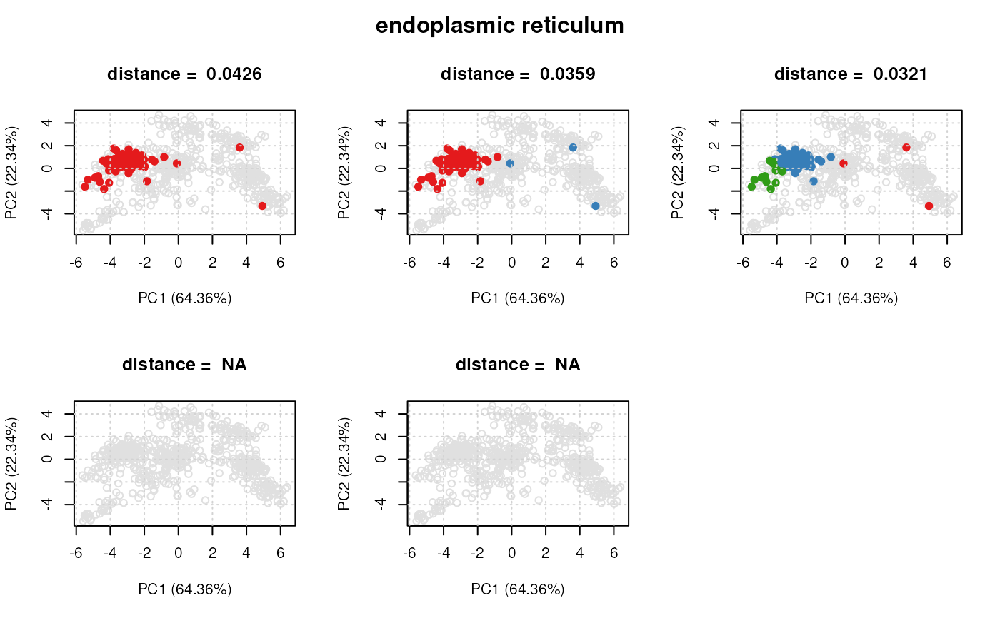
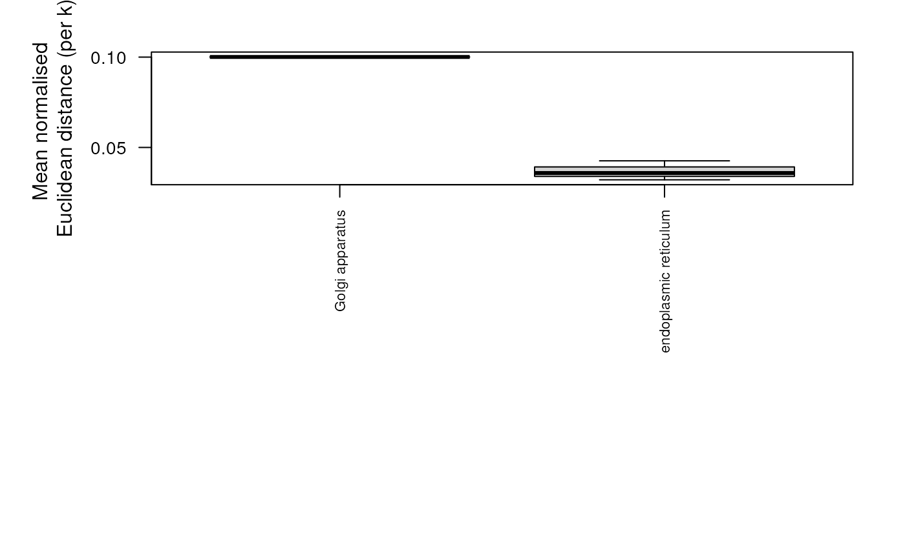

Class "ClustDist"
ClustDist-class.RdThe ClustDist summaries algorithm information, from
running the clustDist function, such as the number
of k's tested for the kmeans, and mean and normalised
pairwise (Euclidean) distances per numer of component
clusters tested.
Slots
k:Object of class
"numeric"storing the number of k clusters tested.dist:Object of class
"list"storing the list of distance matrices.term:Object of class
"character"describing GO term name.id:Object of class
"character"describing the GO term ID.nrow:Object of class
"numeric"showing the number of instances in the setclustsz:Object of class
"list"describing the number of instances for each cluster for each k testedcomponents:Object of class
"vector"storing the class membership of each protein for each k tested.fcol:Object of class
"character"showing the feature column name in the correspondingMSnSetwhere the protein set information is stored.
Examples
showClass("ClustDist")
#> Class "ClustDist" [package "pRoloc"]
#>
#> Slots:
#>
#> Name: k dist term id nrow clustsz
#> Class: numeric list character character numeric list
#>
#> Name: components fcol
#> Class: vector character
library('pRolocdata')
#>
#> This is pRolocdata version 1.45.1.
#> Use 'pRolocdata()' to list available data sets.
data(dunkley2006)
par <- setAnnotationParams(inputs =
c("Arabidopsis thaliana genes",
"Gene stable ID"))
#> Using species Arabidopsis thaliana genes (TAIR10)
#> Warning: Ensembl will soon enforce the use of https.
#> Ensure the 'host' argument includes "https://"
#> Using feature type Gene stable ID(s) [e.g. AT1G01010]
#> Connecting to Biomart...
#> Warning: Ensembl will soon enforce the use of https.
#> Ensure the 'host' argument includes "https://"
## add protein set/annotation information
xx <- addGoAnnotations(dunkley2006, par)
#> Loading required namespace: GO.db
#>
## filter
xx <- filterMinMarkers(xx, n = 50)
#> Retaining 3 out of 79 in GOAnnotations
xx <- filterMaxMarkers(xx, p = .25)
#> Retaining 2 out of 3 in GOAnnotations
## get distances for protein sets
dd <- clustDist(xx)
#>
|
| | 0%
|
|=================================== | 50%
|
|======================================================================| 100%
## plot clusters for first 'ClustDist' object
## in the 'ClustDistList'
plot(dd[[1]], xx)

## plot distances for all protein sets
plot(dd)
